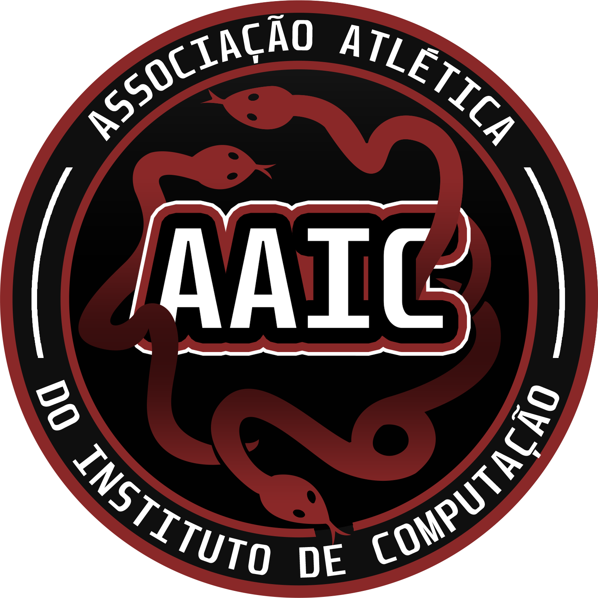

Associação Atlética do Instituto de Computação
Há muitos anos, surgia a Associação Atlética Acadêmica Ada Lovelace e a Associação Atlética de Sistemas de Informação. Dividíamos o mesmo prédio e a mesma paixão. Mas éramos separados, cada um com sua própria identidade, suas próprias tradições e seus próprios desafios.
Com o passar do tempo, foi percebido que, apesar das diferenças, juntos eles eram mais fortes. A rivalidade sempre convergiu para proporcionar momentos incríveis que não teriam conseguido sozinhos. E então, em um momento de união e visão de futuro, nasceu a ideia de juntar forças. Não para apagar o passado, mas para construir um futuro ainda mais brilhante. Em vez de continuar separados, escolhemos evoluir. Três cursos deixaram de ser partes isoladas para formar uma só identidade. Assim, em 2026, surgem as Hidras da UFF trazendo o nome da AAIC UFF. Inspirados na ideia de crescer mesmo diante dos desafios, transformamos diversidade em força. Ciência da Computação. Sistemas de Informação. IA e Ciência de Dados. Diferentes origens. Um só propósito. E uma história que ainda está sendo escrita, por todos que fazem parte dela.Formar a atlética mais forte e unida da UFF, desenvolvendo pessoas dentro e fora das quadras (e cantareiras), e criando uma comunidade que cresce junto, compete junto e se representa com orgulho.
